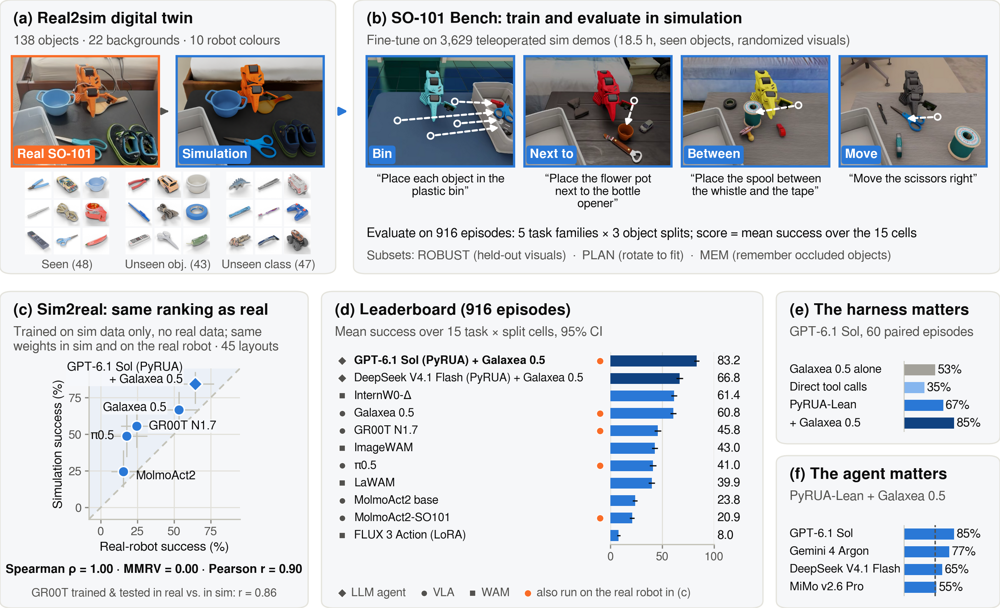
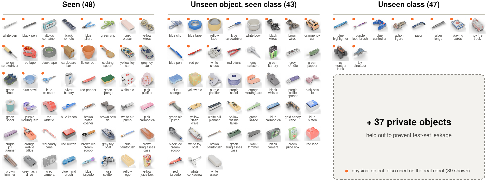
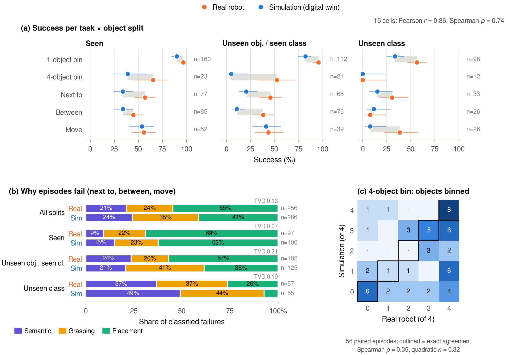
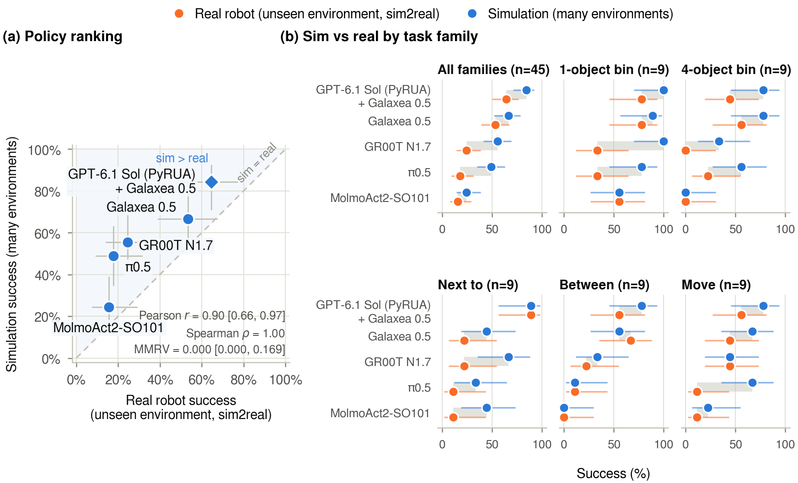
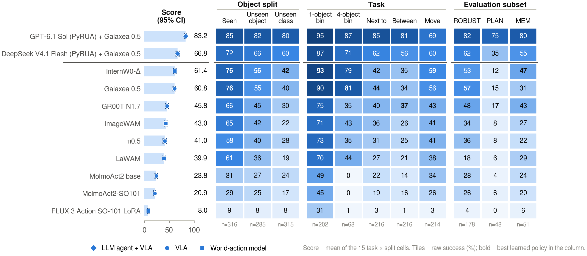
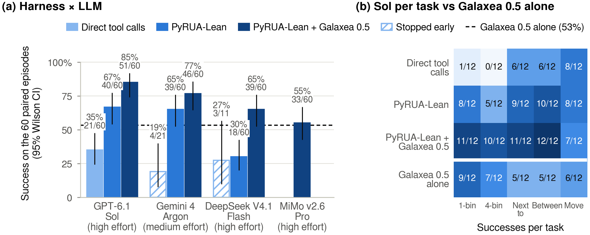

Four-object bin Physical Intelligence π0.5
Matched trial 34 and identical sim-trained weights; independent successful rollouts.
Accessible Spatial Manipulation
Low-cost arms like the SO-101 are now the most common entry point to robot learning, yet no released policy performs spatially constrained, language-conditioned tasks on them out of the box. SO-101 Bench is a simulated benchmark built on a digital twin of a real SO-101 setup: four tasks, 138 objects in three generalization splits and 916 evaluation episodes. Policies trained only on its simulated data keep their ranking on the real robot, and run out of the box in unseen real environments with unseen objects.

Four tasks, scored as five families: bin (one or four objects), next to, between, and directional move.

Independently trained NVIDIA GR00T N1.6-3B policies are compared on 906 episodes matched by task, instruction and ordered object set. Across 15 task × split conditions, Pearson r = 0.86 and Spearman ρ = 0.74.

Five policies trained only on sim data are evaluated in simulation and on the real robot, on 45 matched layouts. The ranking of all five is preserved. Median episode lengths: 197s Sol, 38s Galaxea 0.5, 38s GR00T N1.7, 59s π0.5 and 56s MolmoAct2-SO101.

Matched trial 34 and identical sim-trained weights; independent successful rollouts.
Matched trial 22; independent successful rollouts. Real video defaults to 5× playback; simulation defaults to 1×. Real placement was operator-scored as success; the controller logged a timeout.
Identical sim-trained weights, matched initial layout, independent rollouts. Both episodes succeed.
Matched layout and identical sim-trained weights; independent successful rollouts.
Nine learned policies and two LLM agents on the 916-episode primary evaluation.
916 primary-evaluation episodes span 15 task-family × object-split cells. ROBUST: 178 held-out appearance episodes; PLAN: 48 rotation-to-fit episodes; MEM: 51 occlusion episodes. Subsets overlap.
Learned policies receive 36 hours of fine-tuning on 4 × A100-80GB GPUs; checkpoints are selected on 39 held-out validation episodes.

All ten other leaderboard entries failed each of these episodes. Simulator time pauses while the LLM computes, so the videos run at 1× simulation time.
Ablations use 60 fixed primary-evaluation episodes: 30 easy and 30 hard, selected before running the agents.

With PyRUA-Lean + Galaxea 0.5 held fixed, success is 85% for GPT-6.1 Sol, 77% for Gemini 4 Argon, 65% for DeepSeek V4.1 Flash and 55% for MiMo v2.6 Pro.
| LLM (effort) | Success | API cost | Output tokens (reasoning) | Input tokens (cached) |
|---|---|---|---|---|
| GPT-6.1 Sol (high) | 85% (51/60) | $14.68 | 0.32M (0.15M) | 61.82M (96%) |
| Gemini 4 Argon (medium) | 77% (46/60) | $74.25 | 1.11M (0.86M) | 42.30M (73%) |
| DeepSeek V4.1 Flash (high) | 65% (39/60) | $1.40 | 1.45M (1.23M) | 87.33M (98%) |
| MiMo v2.6 Pro (high) | 55% (33/60) | $2.63 | 1.06M (0.82M) | 75.33M (96%) |
| Galaxea 0.5 alone | 53% (32/60) | $0 | — | — |
Output includes reasoning tokens. Costs use list prices (Gemini: gross Vertex rate); Argon used medium reasoning effort, the other LLMs high. Simulator time pauses during LLM computation.
3,629 sim demonstrations (18.5 h); approximately 4,400 real demonstrations (20 h).
Every learned leaderboard policy, fine-tuned on so101_bench_sim under the shared 36 h budget. These are the weights that run out of the box on the real SO-101.
If you use SO-101 Bench in your research, please cite:
@misc{hickok2026so101bench,
title = {{SO-101 Bench: Accessible Spatial Manipulation}},
author = {Hickok, Truman},
year = {2026},
url = {https://github.com/5hadytru/so101_bench}
}